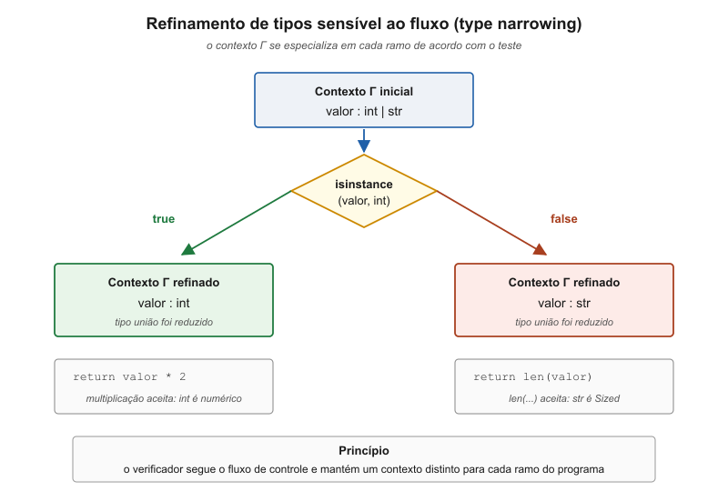
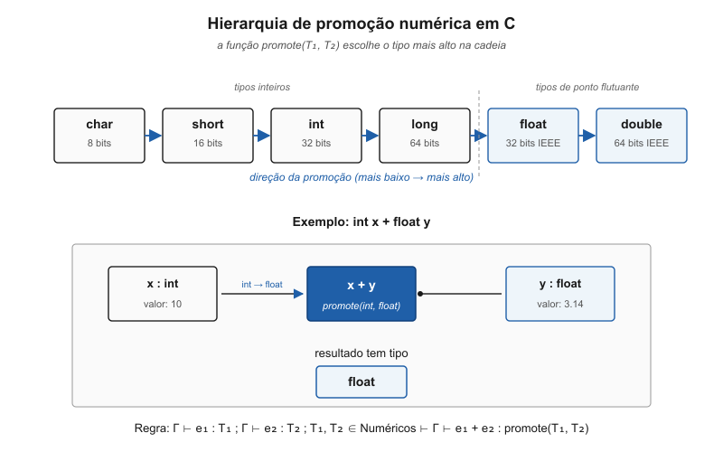
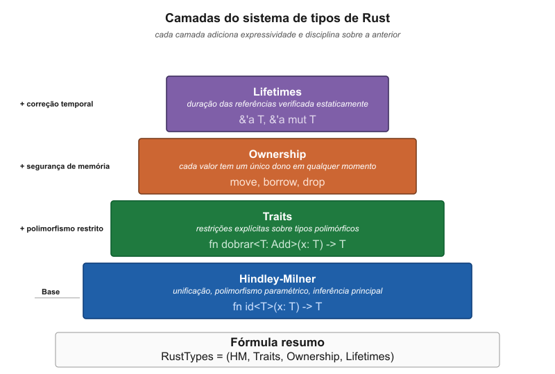
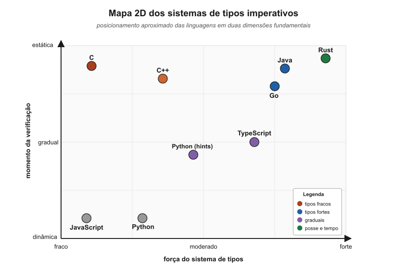

flowchart TB Sistemas["Sistemas de tipos imperativos"] Verificacao["Momento da verificação"] Equivalencia["Equivalência de tipos"] Inferencia["Grau de inferência"] Sistemas --> Verificacao Sistemas --> Equivalencia Sistemas --> Inferencia Verificacao --> Estatico["Estática"] Verificacao --> Gradual["Gradual"] Verificacao --> Dinamico["Dinâmica"] Equivalencia --> Nominal["Nominal"] Equivalencia --> Estrutural["Estrutural"] Equivalencia --> Mista["Mista"] Inferencia --> Nenhuma["Nenhuma"] Inferencia --> Local["Local"] Inferencia --> Fluxo["Sensível ao fluxo"] Inferencia --> Completa["Completa"]
14 Julgamento de Tipos em Linguagens Imperativas
14.1 Do Elegante ao Pragmático: Por Que o Algoritmo W Não Basta
A transição do mundo funcional para o imperativo revela um choque fundamental de filosofias de design. O Algoritmo W, com sua elegância matemática e capacidade de inferência completa, foi projetado para linguagens funcionais puras onde o estado é imutável e as funções são valores de primeira classe. Contudo, as linguagens imperativas introduzem características que tornam a inferência completa de tipos não apenas difícil, mas frequentemente indesejável:
Mutabilidade: em linguagens funcionais, uma vez que x recebe um tipo, ele permanece inalterado. Em linguagens imperativas, x pode ser reatribuído múltiplas vezes, e seu tipo pode precisar ser conhecido explicitamente para cada ponto do programa.
Efeitos colaterais: funções imperativas não são puras. Elas podem modificar estado global, realizar I/O, lançar exceções. O tipo de uma função deve capturar não apenas sua assinatura, mas potencialmente seus efeitos.
Ponteiros e referências: C e C++ introduzem ponteiros, que criam um segundo nível de indireção no sistema de tipos. Um int* não é apenas “um tipo que aponta para int”, mas carrega semântica sobre propriedade de memória, alinhamento e aritmética de ponteiros.
Ordem de declaração: muitas linguagens imperativas permitem que funções sejam chamadas antes de serem declaradas, ou que tipos sejam usados antes de sua definição completa. Isso exige múltiplas passagens ou análise diferida.
Performance previsível: em linguagens de sistemas como C e C++, o programador precisa de controle fino sobre representação de dados e layout de memória. Inferência automática poderia gerar código com características de performance surpreendentes.
A consequência dessas diferenças é que a maioria das linguagens imperativas adota uma filosofia pragmática: verificação de tipos estrita combinada com inferência limitada e previsível. O objetivo não é maximizar a inferência, mas sim encontrar um equilíbrio entre conveniência do programador, clareza do código e previsibilidade do compilador.
14.2 Taxonomia dos Sistemas de Tipos Imperativos
Antes de mergulhar nos detalhes de cada linguagem, é útil estabelecer uma taxonomia das abordagens principais. As linguagens imperativas podem ser classificadas ao longo de vários eixos:
14.2.1 Eixo 1: Momento da Verificação
- Estática pura: toda verificação em tempo de compilação (C, Rust)
- Estática com escape: verificação em compilação, mas com
unsafeou casts (C++, Rust comunsafe) - Híbrida: verificação em compilação e runtime (Java, C#)
- Gradual: opcional em compilação, sempre em runtime (Python com type hints, TypeScript)
- Dinâmica pura: apenas em runtime (JavaScript, Python sem hints)
14.2.2 Eixo 2: Equivalência de Tipos
- Nominal: tipos são iguais se têm o mesmo nome (Java, C#, C++)
- Estrutural: tipos são iguais se têm a mesma estrutura (Go, TypeScript)
- Mista: nominal para tipos nomeados, estrutural para anônimos (OCaml)
14.2.3 Eixo 3: Inferência
- Nenhuma: tipos sempre explícitos (C até C++03)
- Local: inferência em expressões simples (C++11
auto, Javavar) - Fluxo-sensitiva: inferência através de branches (TypeScript, Flow)
- Completa: inferência global (ML, Haskell, parcialmente em Rust)
14.3 Julgamentos Imperativos: Contexto, Estado e Efeitos
Para comparar linguagens imperativas de forma mais rigorosa, precisamos ampliar o julgamento de tipos usado em linguagens funcionais puras. Em uma linguagem funcional simples, um julgamento como \(\Gamma \vdash e : \tau\) é suficiente: no contexto \(\Gamma\), a expressão \(e\) tem tipo \(\tau\). Em linguagens imperativas, porém, expressões e comandos podem depender do estado, modificar variáveis, acessar memória, lançar exceções ou mover valores.
Uma forma mais expressiva de julgamento é:
\[\Gamma ; \Sigma \vdash e : \tau \; ! \; \varepsilon\]
Na qual:
- \(\Gamma\) é o contexto de nomes e tipos, isto é, a informação estática sobre variáveis, funções e tipos declarados;
- \(\Sigma\) é o contexto de memória ou armazenamento, usado quando a linguagem possui referências, ponteiros ou regiões;
- \(\tau\) é o tipo inferido ou verificado para a expressão;
- \(\varepsilon\) é um conjunto de efeitos aproximados, como leitura, escrita, alocação, chamada de função, lançamento de exceção ou I/O.
Para comandos, que normalmente não produzem valor útil, podemos usar:
\[\Gamma ; \Sigma \vdash S : \Gamma' ; \Sigma' \; ! \; \varepsilon\]
Esse julgamento lê-se assim: executar ou aceitar o comando \(S\) no contexto \(\Gamma ; \Sigma\) produz um novo contexto \(\Gamma' ; \Sigma'\) e possui os efeitos \(\varepsilon\). A diferença em relação ao mundo funcional é crucial: um comando pode transformar o contexto do programa.
Regra de declaração de variável:
\[\frac{ \Gamma ; \Sigma \vdash e : \tau' \; ! \; \varepsilon \quad \tau' <: \tau }{ \Gamma ; \Sigma \vdash \text{let } x : \tau = e : \Gamma[x \mapsto \tau] ; \Sigma \; ! \; \varepsilon }\]
Regra de atribuição:
\[\frac{ \Gamma(x) = \text{mut } \tau \quad \Gamma ; \Sigma \vdash e : \tau' \; ! \; \varepsilon \quad \tau' <: \tau }{ \Gamma ; \Sigma \vdash x := e : \Gamma ; \Sigma \; ! \; (\varepsilon \cup \{\text{write}(x)\}) }\]
Regra de sequência:
\[\frac{ \Gamma ; \Sigma \vdash S_1 : \Gamma_1 ; \Sigma_1 \; ! \; \varepsilon_1 \quad \Gamma_1 ; \Sigma_1 \vdash S_2 : \Gamma_2 ; \Sigma_2 \; ! \; \varepsilon_2 }{ \Gamma ; \Sigma \vdash S_1 ; S_2 : \Gamma_2 ; \Sigma_2 \; ! \; (\varepsilon_1 \cup \varepsilon_2) }\]
Essa notação não pretende capturar todos os detalhes de todas as linguagens reais, mas fornece uma lente comum. C relaxa parte das garantias sobre \(\Sigma\); Rust torna \(\Sigma\) e os efeitos de posse muito mais rígidos; Python deixa parte de \(\Gamma\) ser descoberta em tempo de execução; TypeScript refina \(\Gamma\) de maneira sensível ao fluxo de controle.
flowchart LR Entrada["Contexto inicial<br/>Γ ; Σ"] Comando["Comando ou expressão<br/>S ou e"] Julgamento["Julgamento de tipos<br/>Γ ; Σ ⊢ S"] Saida["Contexto resultante<br/>Γ' ; Σ'"] Efeitos["Efeitos aproximados<br/>ε"] Entrada --> Julgamento Comando --> Julgamento Julgamento --> Saida Julgamento --> Efeitos
NoteEstudo de Caso: Julgamento de Tipos em Membros Flexíveis
Considere o código a seguir em C, que define uma estrutura, struct, com um membro de array flexível:
#include <stdio.h>
#include <stdlib.h>
typedef struct {
int len;
int data[];
} Array;
int main(void) {
int n = 5;
// Alocação dinâmica da struct + espaço para 'n' inteiros no array flexível
Array *a = malloc(sizeof(*a) + n * sizeof(a->data[0]));
if (!a) return 1;
a->len = n;
// Preenche o array com múltiplos de 10
for (int i = 0; i < n; i++)
a->data[i] = i * 10;
// Imprime o valor no índice 3 (deve resultar em 30)
printf("%d\n", a->data[3]);
// Libera a memória alocada
free(a);
return 0;
}Esse código utiliza um Flexible Array Member, um desafio interessante para o sistema de tipos. Vamos decompor o julgamento da linha de alocação:
Array *a = malloc(sizeof(*a) + n * sizeof(a->data[0]));1. Contexto (\(\Gamma\)) e Efeitos (\(\varepsilon\)): Nesta linha, o contexto \(\Gamma\) já contém \(n : \text{int}\) e a definição da `struct Array. A execução do malloc possui o efeito \(\varepsilon = \{\text{alloc}\}\), modificando o contexto de memória \(\Sigma\) para incluir uma nova região.
2. Derivação do Tipo de Alocação: Para que a atribuição seja válida, o sistema de tipos deve verificar a compatibilidade entre o ponteiro a e o retorno de malloc. A regra de promoção e cálculo seria:
\[ \frac{\Gamma \vdash \text{sizeof}(*a) : \text{size\_t} \quad \Gamma \vdash n \times \text{sizeof}(a\text{->data}[0]) : \text{size\_t}}{\Gamma \vdash \text{expressão\_total} : \text{size\_t}} \]
3. O Problema da Seta (\(\rightarrow\)): O operador -> é um açúcar sintático para desreferenciamento seguido de acesso. O julgamento para a->len no código seria:
\[ \frac{\Gamma(a) = \text{Array*} \quad \text{Array possui campo } len : \text{int}}{\Gamma ; \Sigma \vdash a \rightarrow len : \text{int} ! \{\text{read}(a)\}} \]
4. Semântica do Membro Flexível: Diferente de um array comum, int data[] não possui tamanho fixo no contexto \(\Gamma\) da struct. Sua segurança de tipos depende inteiramente da semântica operacional: o programador é responsável por garantir que o índice \(i\) no laço for (int i = 0; i < n; i++) respeita o limite \(n\) alocado dinamicamente.
Apesar desta técnica ser muito usada em sistemas de baixo nível, como o Kernel Linux, em linguagens como Rust, esse código seria rejeitado ou exigiria um bloco unsafe, pois o sistema de tipos \((\text{Ownership}, \text{Lifetimes})\) exige provas estáticas de que o acesso a->data[i] não transborda os limites da região \(\Sigma\).
Embora o Flexible Array Member seja uma técnica poderosa em C, ele não faz parte do padrão C++. Ainda que alguns compiladores mantenham suporte a ao uso de Flexible Array Member, as técnicas modernas de C++ priorizam o gerenciamento automático de memória e o conhecimento estático do tamanho dos objetos. Para obter o mesmo efeito de forma moderna e segura, a atenta leitora poderá usar as seguintes alternativas:
1. std::vector (O Padrão Ouro) A solução mais comum que gerencia automaticamente a alocação e liberação de memória (RAII).
struct Array {
std::vector<int> data;
};- Segurança: Previne vazamentos de memória e oferece verificação de limites.
- Flexibilidade: O tamanho pode crescer dinamicamente conforme a necessidade.
2. std::span (C++20) Ideal para quando você precisa de uma visão segura sobre um bloco contíguo de memória já existente, sem assumir a posse dos dados.
struct Array {
std::span<int> data;
};
void processar(std::span<int> dados);3. std::inplace_vector (C++26) Para casos onde a localidade de cache é vital e você deseja evitar alocações na Heap, mantendo os dados contíguos dentro da própria estrutura, similar ao FAM do C.
struct Array {
std::inplace_vector<int, 10> data; // Capacidade fixa interna
};Conclusão Semântica: Enquanto no C a segurança depende da disciplina operacional do programador (semântica operacional), no C++ moderno ela é garantida pelo Sistema de Tipos e pelas abstrações da biblioteca padrão.
14.4 Python: Do Dinâmico ao Gradual
Python representa uma abordagem radicalmente diferente. Historicamente uma linguagem puramente dinâmica, ela evoluiu para um sistema de tipagem gradual com a PEP 484 (2014).
14.4.1 Python Puro: duck typing
No Python tradicional, não há julgamento de tipos em tempo de compilação:
def soma(a, b):
return a + b
resultado = soma(3, 5) # Funciona: 8
resultado = soma("oi", "lá") # Funciona: "oilá"
resultado = soma(3, "lá") # TypeError em *runtime*O sistema de tipos é baseado em duck typing: se anda como pato e faz quack como pato, então é um pato. O que importa não é o tipo nominal de um objeto, mas sim quais operações ele suporta.
Formalmente, não há julgamento de tipo estático. O tipo de uma expressão só é conhecido em runtime:
\[\text{typeof}(e, \sigma) = \tau\]
Onde \(\sigma\) é o estado do programa (valores concretos) e \(\tau\) é o tipo descoberto em runtime.
14.4.2 Python com Type hints: Tipagem Gradual
A PEP 484 introduziu anotações de tipo opcionais:
def soma(a: int, b: int) -> int:
return a + b
# Type checker (mypy) pode detectar erro:
resultado: int = soma(3, "olá") # Type error em análise estáticaO sistema de julgamento de tipos para Python anotado usa equivalência estrutural com subtipagem:
Regra de Subtipagem (Subsumption):
\[\frac{\Gamma \vdash e : T_1 \quad T_1 <: T_2}{\Gamma \vdash e : T_2}\]
Se e tem tipo T₁ e T₁ é subtipo de T₂, então e pode ser usado onde T₂ é esperado.
Exemplo prático:
from typing import Protocol
class Desenhavel(Protocol):
def desenhar(self) -> None: ...
class Circulo:
def desenhar(self) -> None:
print("○")
class Quadrado:
def desenhar(self) -> None:
print("□")
def renderizar(obj: Desenhavel) -> None:
obj.desenhar()
# Type checker aceita ambos:
renderizar(Circulo()) # OK: Circulo é estruturalmente compatível
renderizar(Quadrado()) # OK: Quadrado é estruturalmente compatívelO julgamento aqui é:
\[\frac{\text{Circulo} <: \text{Desenhavel}}{\Gamma \vdash \text{Circulo()} : \text{Desenhavel}}\]
Características únicas do sistema Python:
- Verificação é opcional: código sem anotações é válido
- Structural subtyping: protocols definem interfaces estruturais
- Tipo
Any: escape hatch que é compatível com tudo - Union types:
int | strpermite múltiplos tipos - Type narrowing: refinamento de tipos em branches
def processar(valor: int | str) -> int:
if isinstance(valor, int):
# Aqui, type checker sabe que valor: int
return valor * 2
else:
# Aqui, type checker sabe que valor: str
return len(valor)O refinamento de tipos pode ser expresso como uma transformação local do contexto. Se antes do teste sabemos que valor tem tipo int | str, dentro do ramo verdadeiro o contexto é refinado para valor : int, e no ramo falso para valor : str:
\[\frac{ \Gamma \vdash x : T_1 \cup T_2 \quad \Gamma[x \mapsto T_1] \vdash e_1 : \tau \quad \Gamma[x \mapsto T_2] \vdash e_2 : \tau }{ \Gamma \vdash \text{if } \texttt{isinstance}(x,T_1) \text{ then } e_1 \text{ else } e_2 : \tau }\]
Essa regra mostra por que a tipagem gradual moderna não é apenas uma anotação superficial. O verificador de tipos acompanha o fluxo de controle e constrói contextos diferentes para cada ramo do programa.

14.5 C: Tipagem Nominal Minimalista
C representa o extremo oposto: um sistema de tipos estático, fraco e nominal, projetado para estar o mais próximo possível do hardware.
14.5.1 Sistema de Tipos de C
O sistema de tipos de C é deliberadamente minimalista. As regras de julgamento são simples, mas permissivas:
Regra de Declaração de Variável:
\[\frac{T \in \{\text{int, float, char, ...}\}}{\Gamma \vdash (T \, x;) : \text{ok}, \quad \Gamma' = \Gamma \cup \{x : T\}}\]
Regra de Coerção Aritmética:
\[\frac{\Gamma \vdash e_1 : T_1 \quad \Gamma \vdash e_2 : T_2 \quad T_1, T_2 \in \text{NumericTypes}}{\Gamma \vdash e_1 + e_2 : \text{promote}(T_1, T_2)}\]
Onde promote segue a hierarquia: char < short < int < long < float < double como pode ser visto na Figure 14.4.

Exemplo:
int x = 10;
float y = 3.14;
double z = x + y; // x promovido para float, resultado promovido para double14.5.2 A Fraqueza Controlada: Casts e Ponteiros
O que torna C “fracamente tipado” é sua permissividade com casts e aritmética de ponteiros:
int x = 42;
float* p = (float*)&x; // Cast inseguro: reinterpreta bits
*p = 3.14; // Comportamento indefinido
char* str = "Hello";
int offset = str[2]; // 'l' interpretado como intRegra de Cast (Conversão Explícita):
\[\frac{\Gamma \vdash e : T_1}{\Gamma \vdash (T_2)e : T_2}\]
Esta regra é perigosamente permissiva: ela aceita qualquer cast, transferindo a responsabilidade de correção para o programador. O compilador confia que você sabe o que está fazendo.
Exemplo de julgamento em C:
Para o código:
int x = 10;
int* p = &x;
int y = *p + 5;A derivação seria:
\[\frac{ \frac{}{\Gamma_0 \vdash 10 : \text{int}} \quad \Gamma_1 = \{x : \text{int}\} }{ \Gamma_1 \vdash (x = 10) : \text{ok} }\]
\[\frac{ \frac{x : \text{int} \in \Gamma_1}{\Gamma_1 \vdash \&x : \text{int*}} \quad \Gamma_2 = \Gamma_1 \cup \{p : \text{int*}\} }{ \Gamma_2 \vdash (p = \&x) : \text{ok} }\]
\[\frac{ \frac{p : \text{int*} \in \Gamma_2}{\Gamma_2 \vdash *p : \text{int}} \quad \frac{}{\Gamma_2 \vdash 5 : \text{int}} }{ \Gamma_2 \vdash *p + 5 : \text{int} }\]
14.6 C++: Templates e Dedução de Tipos
C++ estende C com um sistema de tipos significativamente mais rico, mas mantém compatibilidade com a fraqueza controlada de C.
14.6.1 Templates: duck typing em Tempo de Compilação
Templates em C++ são essencialmente duck typing estático. Um template é instanciado apenas quando usado, e o compilador verifica se todas as operações requeridas existem:
template<typename T>
T max(T a, T b) {
return a > b ? a : b;
}
int x = max(3, 5); // T deduzido como int
double y = max(3.1, 2.9); // T deduzido como doubleRegra de Instanciação de Template:
\[\frac{ \Gamma \vdash e_1 : T \quad \Gamma \vdash e_2 : T \quad T \text{ suporta } > }{ \Gamma \vdash \text{max}(e_1, e_2) : T }\]
Esta verificação acontece por instanciação: o compilador substitui T por cada tipo concreto usado e então verifica se as operações são válidas.
14.6.2 Dedução de Tipos com auto
C++11 introduziu auto, que realiza inferência de tipo local:
auto x = 42; // x : int
auto y = 3.14; // y : double
auto z = x + y; // z : double
auto f = [](int x) { // f : lambda com tipo deduzido
return x * 2;
};Regra de Dedução para auto:
\[\frac{\Gamma \vdash e : \tau}{\Gamma \vdash (\text{auto } x = e) : \text{ok}, \quad \Gamma' = \Gamma \cup \{x : \tau\}}\]
O tipo de x é exatamente o tipo de e, sem coerções automáticas.
14.6.3 Concepts (C++20): Restrições Explícitas
C++20 introduziu concepts para adicionar restrições explícitas a templates:
template<typename T>
concept Numeric = std::is_arithmetic_v<T>;
template<Numeric T>
T quadrado(T x) {
return x * x;
}
int a = quadrado(5); // OK
double b = quadrado(3.14); // OK
// std::string c = quadrado("oi"); // ERRO: string não satisfaz NumericRegra de Concept:
\[\frac{ \Gamma \vdash T \models C \quad \Gamma, x : T \vdash e : \tau }{ \Gamma \vdash (\text{concept } C\, T \Rightarrow e) : \tau }\]
Onde \(T \models C\) significa “T satisfaz as restrições do concept C”.
14.6.4 Exemplo Completo de Julgamento em C++
Para o código:
template<typename T>
auto soma_dobro(T a, T b) -> decltype(a + b) {
return (a + b) * 2;
}
auto resultado = soma_dobro(3, 5);A derivação envolve múltiplas etapas:
Dedução do parâmetro de template: \[\frac{\Gamma \vdash 3 : \text{int} \quad \Gamma \vdash 5 : \text{int}}{T = \text{int}}\]
Dedução do tipo de retorno (usando
decltype): \[\frac{\Gamma \vdash (a + b) : \text{int}}{\text{decltype}(a + b) = \text{int}}\]Verificação do corpo: \[\frac{ \Gamma, a : \text{int}, b : \text{int} \vdash (a + b) * 2 : \text{int} }{ \Gamma \vdash \text{soma\_dobro}<\text{int}> : (\text{int}, \text{int}) \rightarrow \text{int} }\]
Dedução de
auto: \[\frac{\Gamma \vdash \text{soma\_dobro}(3, 5) : \text{int}}{\Gamma \vdash \text{auto resultado} : \text{int}}\]
14.7 Rust: Hindley-Milner Encontra Sistemas
Rust é a linguagem imperativa moderna que mais se aproxima da elegância dos sistemas de tipos funcionais, mas com extensões úteis para programação de sistemas.
14.7.1 Sistema Base: Inferência Hindley-Milner
O sistema de tipos de Rust é baseado em Hindley-Milner, permitindo inferência quase completa:
fn soma(a: i32, b: i32) -> i32 {
a + b
}
let x = 5; // Tipo inferido: i32
let y = soma(x, 10); // Tipo inferido: i32Contudo, Rust adiciona três extensões fundamentais:
14.7.2 Restrições Baseadas em Traits
Traits em Rust são similares a type classes em Haskell, mas com semântica de sistemas:
trait Adicionavel {
fn adicionar(&self, outro: &Self) -> Self;
}
fn soma_generica<T: Adicionavel>(a: T, b: T) -> T {
a.adicionar(&b)
}Regra de Trait Bound:
\[\frac{ \Gamma \vdash T : \text{trait } C \quad \Gamma, x : T \vdash e : \tau }{ \Gamma \vdash \text{fn}(x : T \text{ com } T : C) \rightarrow \tau : (T \rightarrow \tau) }\]
14.7.3 Ownership e Lifetimes
A característica mais distintiva de Rust é seu sistema de ownership e lifetimes, que são parte integrante do sistema de tipos:
fn primeiro<'a>(s: &'a str) -> &'a str {
s.split_whitespace().next().unwrap_or("")
}Regra de Lifetime:
\[\frac{ \Gamma; \Delta \vdash e : \tau \quad \Delta \vdash \tau : 'a \quad 'a \text{ outlives todas as refs em } \tau }{ \Gamma; \Delta \vdash e : \tau_{/'a} }\]
Onde \(\Delta\) é o contexto de lifetimes e \(\tau_{/'a}\) é o tipo \(\tau\) anotado com lifetime \('a\).
Também podemos escrever regras simplificadas para posse e empréstimo. Seja \(\Omega\) o contexto de posse, registrando quais variáveis ainda possuem seus valores e quais estão emprestadas. Um movimento consome a posse do valor original:
\[\frac{ \Gamma ; \Omega \vdash x : \text{own}(T) }{ \Gamma ; \Omega \vdash \text{move}(x) : T \quad \Omega' = \Omega[x \mapsto \text{moved}] }\]
Um empréstimo compartilhado não consome a posse, mas registra que há uma referência imutável ativa:
\[\frac{ \Gamma ; \Omega \vdash x : \text{own}(T) }{ \Gamma ; \Omega \vdash \&x : \&'a T \quad \Omega' = \Omega[x \mapsto \text{shared}('a)] }\]
Já um empréstimo mutável exige exclusividade:
\[\frac{ \Gamma ; \Omega \vdash x : \text{own}(T) \quad x \notin \text{borrowed}(\Omega) }{ \Gamma ; \Omega \vdash \&mut\,x : \&'a mut\,T \quad \Omega' = \Omega[x \mapsto \text{unique}('a)] }\]
Essas regras são esquemáticas, mas capturam a intuição central do borrow checker: múltiplas leituras compartilhadas são aceitáveis, mas uma escrita mutável exige acesso exclusivo. A segurança de memória em Rust nasce exatamente dessa disciplina de tipos aplicada ao uso de referências.
stateDiagram-v2 [*] --> Livre Livre --> Movido: move(x) Livre --> Compartilhado: &x Livre --> Mutavel: &mut x Compartilhado --> Compartilhado: novos &x Compartilhado --> Livre: fim dos empréstimos Mutavel --> Livre: fim do empréstimo Mutavel --> Rejeitado: &x ou &mut x simultâneo Compartilhado --> Rejeitado: &mut x simultâneo Movido --> Rejeitado: uso de x
Exemplo de julgamento com lifetimes:
fn maior<'a>(s1: &'a str, s2: &'a str) -> &'a str {
if s1.len() > s2.len() { s1 } else { s2 }
}
let resultado;
{
let texto1 = String::from("curto");
let texto2 = String::from("mais longo");
resultado = maior(&texto1, &texto2); // ERRO: texto1 não vive o suficiente
}A derivação falharia:
\[\frac{ \Gamma; \{\text{texto1} : 'b\} \vdash \&\text{texto1} : \&'b \text{str} }{ \text{ERRO: } 'b \not\sqsupseteq 'a \text{ (lifetime esperado)} }\]
14.7.4 Inferência Bidirecional
Rust usa inferência bidirecional para combinar anotações explícitas com dedução:
let v: Vec<_> = vec![1, 2, 3]; // Vec<i32> inferido
let soma = v.iter().sum(); // Tipo de retorno inferido do contextoRegra de Inferência Bidirecional:
- Modo de síntese (\(\Gamma \vdash e \Rightarrow \tau\)): deduz o tipo de
e - Modo de herança (\(\Gamma \vdash e \Leftarrow \tau\)): verifica se
etem tipo \(\tau\)
\[\frac{ \Gamma \vdash e \Rightarrow \tau_1 \quad \tau_1 = \tau_2 }{ \Gamma \vdash e \Leftarrow \tau_2 }\]
14.7.5 Sistema Completo de Rust
O sistema de tipos de Rust pode ser formalizado como uma tupla:
\[\text{RustTypes} = (\text{HM}, \text{Traits}, \text{Ownership}, \text{Lifetimes})\]

Exemplo de derivação completa:
fn processar<'a, T: Clone>(dados: &'a [T]) -> Vec<T> {
dados.iter().cloned().collect()
}A derivação verifica:
- Trait bound:
T : Clone - Lifetime:
'apara a referência de slice - Inferência: tipo de retorno é
Vec<T> - Ownership:
cloned()cria cópias, satisfazendo ownership
\[\frac{ \begin{gathered} T : \text{Clone} \\ \Gamma; \{'a\} \vdash \text{dados} : \&'a [T] \\ \Gamma \vdash \text{iter}() : \text{Iter}<\&T> \\ \Gamma \vdash \text{cloned}() : \text{Iter}<T> \\ \Gamma \vdash \text{collect}() : \text{Vec}<T> \end{gathered} }{ \Gamma \vdash \text{processar} : \forall 'a, T : \text{Clone}. \, \&'a[T] \rightarrow \text{Vec}<T> }\]
14.8 Casos Especiais: TypeScript, Go e Swift
14.8.1 TypeScript: Tipagem Estrutural Gradual
TypeScript combina tipagem estrutural com inferência flow-sensitive(como visto em Figure 14.3):
function processar(valor: string | number): number {
if (typeof valor === "string") {
// Aqui, TypeScript sabe que valor: string
return valor.length;
} else {
// Aqui, TypeScript sabe que valor: number
return valor * 2;
}
}Regra de Type Narrowing:
\[\frac{ \Gamma \vdash e : T_1 | T_2 \quad \Gamma, e : T_1 \vdash b_1 : \tau \quad \Gamma, e : T_2 \vdash b_2 : \tau }{ \Gamma \vdash (\text{if typeof}(e) \text{ then } b_1 \text{ else } b_2) : \tau }\]
14.8.2 Go: Simplicidade Nominal
Go usa um sistema simples e nominal, mas com interfaces estruturais:
type Desenhavel interface {
Desenhar() string
}
type Circulo struct{}
func (c Circulo) Desenhar() string {
return "○"
}
// Circulo implementa Desenhavel implicitamenteRegra de Interface Implícita:
\[\frac{ \forall m \in \text{methods}(I), \quad T \text{ implementa } m }{ T <: I }\]
14.8.3 Swift: Sistema Híbrido
Swift combina inferência local forte com type classes (protocols) e tipos opcionais:
func processar<T: Numeric>(valor: T?) -> T {
return valor ?? 0
}14.9 Comparação: Complexidade dos Sistemas
A tabela a seguir resume as características dos sistemas de tipos discutidos:
| Linguagem | Verificação | Equivalência | Inferência | Complexidade |
|---|---|---|---|---|
| Python | Gradual | Estrutural | Nenhuma (puro) / flow-sensitive (hints) | O(n) (hints) |
| C | Estática fraca | Nominal | Nenhuma | O(n) |
| C++ | Estática fraca | Nominal | Local (auto) / Instanciação (templates) | O(n) (base) / Exponencial (templates) |
| Rust | Estática forte | Nominal | Global (quase HM) | O(n³) (pior caso) |
| TypeScript | Gradual | Estrutural | flow-sensitive | O(n²) |
| Go | Estática forte | Nominal (estrutural p/ interfaces) | Nenhuma | O(n) |
| Java | Estática forte | Nominal | Local (var) | O(n) |

14.10 Trade-offs Fundamentais
A evolução dos sistemas de tipos em linguagens imperativas revela três trade-offs fundamentais:
14.10.1 1. Expressividade vs. Decidibilidade
- C: Sistema simples e sempre decidível, mas expressividade limitada
- C++: Templates Turing-completos, decidibilidade sacrificada
- Rust: Máxima expressividade mantendo decidibilidade (com restrições)
14.10.2 2. Segurança vs. Performance
- C: Segurança mínima, performance máxima
- Java/C#: Segurança com verificações runtime quando necessário
- Rust: Segurança sem custo em runtime (zero-cost abstractions)
14.10.3 3. Inferência vs. Clareza
- ML/Haskell: Inferência máxima, pode ser confuso
- C/Go: Tipos explícitos, sempre claro mas verboso
- Rust/C++: Inferência local, balanceando ambos
14.11 Conclusão: O Pragmatismo Vence a Elegância
A comparação entre o Algoritmo W e os sistemas de tipos imperativos revela uma verdade fundamental sobre design de linguagens: não existe solução universal. O Algoritmo W é uma maravilha matemática para linguagens funcionais puras, mas as necessidades do mundo imperativo exigem abordagens diferentes.
As linguagens imperativas modernas convergem para um modelo híbrido:
- Verificação estática rigorosa onde possível
- Inferência local previsível para conveniência
- Escape hatches controlados para flexibilidade
- Sistemas de restrições (traits, concepts, protocols) para polimorfismo
O futuro provavelmente verá mais convergência: linguagens funcionais adotando características imperativas (efeitos, mutabilidade controlada) e linguagens imperativas adotando ideias funcionais (inferência, imutabilidade por padrão, pattern matching). O sistema de tipos de Rust pode representar um vislumbre desse futuro: a ponte entre a elegância teórica e as necessidades práticas da programação de sistemas.
14.12 Exercícios
Os exercícios a seguir exploram a classificação de sistemas de tipos, a escrita de regras de julgamento e a comparação entre linguagens imperativas reais. Use a notação introduzida no capítulo: \(\Gamma ; \Sigma \vdash e : \tau \; ! \; \varepsilon\) para julgamentos completos, e a versão simplificada \(\Gamma \vdash e : \tau\) quando o estado e os efeitos não forem relevantes.
14.12.1 Classificação de sistemas de tipos
14.12.1.1 Exercício 1: Posicionamento nos três eixos
Classifique C, Java, TypeScript, Go e Rust nos três eixos apresentados neste capítulo: momento da verificação, equivalência de tipos e inferência.
Solução:
| Linguagem | Verificação | Equivalência | Inferência |
|---|---|---|---|
| C | Estática (fraca, com casts) | Nominal | Nenhuma |
| Java | Estática (forte) + runtime checks | Nominal | Local (var desde Java 10) |
| TypeScript | Gradual | Estrutural | Sensível ao fluxo |
| Go | Estática (forte) | Nominal, estrutural para interfaces | Nenhuma |
| Rust | Estática (muito forte) | Nominal | Quase global (HM-like) |
Observações: a tipagem fraca de C decorre da permissividade dos casts e da aritmética de ponteiros, não do momento da verificação. Java é estática mas usa verificações em runtime para casts descendentes e arrays. Go é único na combinação de equivalência nominal para tipos nomeados e estrutural para interfaces.
14.12.1.2 Exercício 2: Por que Python é gradual?
Explique por que Python com type hints é gradual, e não simplesmente estaticamente tipado.
Solução:
Tipagem gradual difere de tipagem estática em três aspectos centrais:
As anotações são opcionais: código sem anotações continua válido. Em uma linguagem estaticamente tipada, ausência de tipo é erro.
As anotações não são executadas em runtime: o interpretador Python ignora as anotações de tipo durante a execução. Programas anotados com tipos errados rodam normalmente até que a violação cause uma falha em runtime.
Existe um tipo de escape (
Any): o tipoAnyé compatível com tudo, e seu uso desabilita a verificação local. Isso permite interoperabilidade entre código tipado e não tipado.
Em uma linguagem estaticamente tipada (Java, Rust), o compilador rejeita o programa se a verificação não passar; em Python anotado, o verificador externo (mypy, pyright) emite avisos, mas o código pode rodar mesmo assim. A gradualidade é a fronteira controlada entre os dois mundos.
14.12.1.3 Exercício 3: Rust e Hindley-Milner
Em que sentido Rust se aproxima de Hindley-Milner e em que sentido se afasta dele?
Solução:
Aproximações com HM:
- Inferência local de tipos sem anotações em maior parte das atribuições (
let x = 5;). - Polimorfismo paramétrico via parâmetros genéricos
<T>. - Unificação de tipos para resolver variáveis de tipo durante a inferência.
- Princípio de “type principal”: para um termo bem tipado, existe um tipo mais geral que captura todas as instâncias possíveis.
Afastamentos em relação a HM:
- Trait bounds:
fn f<T: Clone>exige restrições explícitas que HM puro não tem (HM puro é paramétrico, sem ad-hoc). - Lifetimes: nenhuma noção análoga em HM. Rust adiciona um sistema de regiões temporais entrelaçado com tipos.
- Ownership: HM trata tipos imutáveis e funções puras; Rust precisa rastrear posse, movimento e empréstimo.
- Inferência limitada em assinaturas de função: tipos de parâmetros e retorno devem ser declarados, ao contrário de HM, em que tudo pode ser inferido.
Resumindo, Rust pega a inferência de tipos de HM e a estende com traits (polimorfismo ad-hoc estruturado), ownership (linearidade) e lifetimes (regiões), pagando o preço de declarações em fronteiras de função.
14.12.2 Julgamentos em linguagens imperativas
14.12.2.1 Exercício 4: Derivação de declaração e atribuição
Usando o julgamento \(\Gamma ; \Sigma \vdash S : \Gamma' ; \Sigma' \; ! \; \varepsilon\), construa a derivação para:
int x = 3;
x = x + 1;explicando quais efeitos aparecem em \(\varepsilon\).
Solução:
Estado inicial: \(\Gamma_0 = \emptyset\), \(\Sigma_0 = \emptyset\), \(\varepsilon_0 = \emptyset\).
Primeiro comando (int x = 3):
\[\frac{\Gamma_0; \Sigma_0 \vdash 3 : \text{int} \; ! \; \emptyset}{\Gamma_0; \Sigma_0 \vdash (\text{int } x = 3) : \Gamma_1 ; \Sigma_0 \; ! \; \emptyset}\]
com \(\Gamma_1 = \{x : \text{mut int}\}\). Sem efeitos: literais não geram leituras nem escritas observáveis.
Segundo comando (x = x + 1):
\[\frac{\Gamma_1(x) = \text{mut int} \quad \Gamma_1; \Sigma_0 \vdash x + 1 : \text{int} \; ! \; \{\text{read}(x)\}}{\Gamma_1; \Sigma_0 \vdash (x = x+1) : \Gamma_1 ; \Sigma_0 \; ! \; \{\text{read}(x), \text{write}(x)\}}\]
A leitura de \(x\) no operando direito gera read(x); a atribuição final gera write(x).
Sequência completa:
\[\Gamma_0 ; \Sigma_0 \vdash (\text{int } x = 3 ; x = x+1) : \Gamma_1 ; \Sigma_0 \; ! \; \{\text{read}(x), \text{write}(x)\}\]
Os efeitos finais são a união dos efeitos das partes. A declaração não contribui para \(\varepsilon\) neste modelo, mas modifica o contexto \(\Gamma\).
14.12.2.2 Exercício 5: Constante imutável
Escreva uma regra de tipagem para const x : T = e e explique por que x = e2 deve ser rejeitada depois.
Solução:
Γ ; Σ ⊢ e : T' ! ε T' <: T
--------------------------------------
Γ ; Σ ⊢ const x : T = e : Γ[x ↦ const T] ; Σ ! εA diferença em relação a let mut é que o tipo armazenado em \(\Gamma\) é const T, marcando o vínculo como imutável.
A regra de atribuição posterior consulta \(\Gamma(x)\) e exige mut T. Para uma variável marcada como const T, a premissa \(\Gamma(x) = \text{mut } T\) falha:
\[\frac{\Gamma(x) = \text{const } T \quad \cdots}{\Gamma ; \Sigma \vdash x = e_2 : \cdots}\]
Não há regra que case com esse contexto. O verificador rejeita a atribuição. Linguagens reais (const em C++, final em Java, let sem mut em Rust, val em Scala) implementam essa distinção via marcação no contexto, exatamente como a regra acima.
14.12.2.3 Exercício 6: Efeitos com exceções
Estenda informalmente o conjunto de efeitos \(\varepsilon\) para representar uma expressão que pode lançar uma exceção.
Solução:
Adicionamos ao conjunto \(\varepsilon\) um novo tipo de efeito: throws(E), indicando que a expressão pode lançar uma exceção do tipo E. A regra para o operador de divisão, por exemplo, ficaria:
\[\frac{\Gamma; \Sigma \vdash e_1 : \text{int} \; ! \; \varepsilon_1 \quad \Gamma; \Sigma \vdash e_2 : \text{int} \; ! \; \varepsilon_2}{\Gamma; \Sigma \vdash e_1 / e_2 : \text{int} \; ! \; \varepsilon_1 \cup \varepsilon_2 \cup \{\text{throws}(\text{DivByZero})\}}\]
Para uma sequência \(S_1 ; S_2\), os efeitos da sequência incluem todos os efeitos de exceção possíveis de \(S_1\) e \(S_2\). Um bloco try-catch pode reduzir os efeitos: se o catch trata throws(E), o efeito é removido do conjunto que sai do bloco:
\[\frac{\Gamma \vdash S : \tau \; ! \; \varepsilon \quad \text{throws}(E) \in \varepsilon \quad \Gamma \vdash H : \tau \; ! \; \varepsilon'}{\Gamma \vdash \text{try } S \text{ catch}(E)\,H : \tau \; ! \; (\varepsilon \setminus \{\text{throws}(E)\}) \cup \varepsilon'}\]
Sistemas reais que rastreiam esse tipo de efeito incluem Java (throws clauses), Koka (effect rows) e parte do design proposto para Scala 3 effects.
14.12.3 Subtipagem, coerção e equivalência
14.12.3.1 Exercício 7: Compatibilidade nominal vs estrutural
Dê um exemplo de dois tipos compatíveis em sistema estrutural mas incompatíveis em sistema nominal.
Solução:
Em uma linguagem estrutural como TypeScript:
type Pessoa = { nome: string; idade: number };
type Funcionario = { nome: string; idade: number };
const p: Pessoa = { nome: "Ana", idade: 30 };
const f: Funcionario = p; // OK: estrutura idênticaEm TypeScript, Pessoa e Funcionario são intercambiáveis porque ambos têm os mesmos campos com os mesmos tipos.
A mesma definição em Java (sistema nominal) seria incompatível:
class Pessoa { String nome; int idade; }
class Funcionario { String nome; int idade; }
Pessoa p = new Pessoa(...);
Funcionario f = p; // ERRO: Pessoa não é FuncionarioMesmo com estrutura idêntica, os nomes diferem, então os tipos são distintos. O programador precisaria converter explicitamente, herdar de uma superclasse comum ou implementar uma interface compartilhada.
A escolha entre nominal e estrutural carrega consequências: nominal protege a intenção semântica do programador (Pessoa representa algo conceitualmente diferente de Funcionario); estrutural maximiza intercambialidade (qualquer coisa que se pareça com pato é pato).
14.12.3.2 Exercício 8: Regra de coerção numérica
Escreva uma regra que permita usar uma expressão int onde se espera float.
Solução:
A regra introduz uma coerção implícita quando o tipo da expressão é “menor” que o esperado:
\[\frac{\Gamma \vdash e : \text{int}}{\Gamma \vdash e : \text{float}} (\text{Coerce-IntFloat})\]
Esta regra introduz uma forma fraca de subtipagem: int <: float. Em derivações, ela funciona como uma regra de subsumção e pode ser aplicada onde for necessária.
Operacionalmente, o compilador insere uma conversão (instrução de hardware ou operação de biblioteca) no ponto da coerção. Em uma AST decorada, isso aparece como um nó Coerce(int → float) envolvendo a expressão original.
A regra pode ser estendida para a hierarquia completa char <: short <: int <: long <: float <: double. A coerção em cada passo é não-destrutiva, mas a transitividade pode acumular perda de precisão (por exemplo, long → float perde dígitos significativos para valores grandes).
14.12.3.3 Exercício 9: Casts em C como escape hatch
Explique por que casts em C funcionam como escape hatch do sistema de tipos.
Solução:
A regra de cast em C é:
\[\frac{\Gamma \vdash e : T_1}{\Gamma \vdash (T_2)e : T_2}\]
A regra não tem premissa relacionando \(T_1\) e \(T_2\). Qualquer coisa pode ser convertida em qualquer outra coisa, sem que o sistema de tipos ofereça resistência.
O efeito prático é que o programador pode contornar o sistema de tipos sempre que precisar:
int x = 42;
float* p = (float*)&x; // tipo aceito; semântica indefinida
*p = 3.14;Essa permissividade é por design: C foi pensado como linguagem de sistemas, em que reinterpretação de bytes (para alocação manual, comunicação com hardware, manipulação de protocolos) é necessária. O custo é que a verificação de tipos em C garante muito menos do que parece: passar um cast significa “o programador prometeu que sabe o que está fazendo”, não “o sistema verificou”.
Linguagens posteriores (C++, Rust) refinam o conceito introduzindo casts diferenciados:
static_cast(C++): conversões verificadas em compilação;reinterpret_cast(C++): equivalente ao cast de C, marcado claramente como inseguro;as(Rust): conversões numéricas seguras; reinterpretação só via blocosunsafe.
A diferenciação separa coerções legítimas de bypass do sistema, mantendo escape hatches mas tornando-os explícitos.
14.12.4 Inferência local e fluxo de controle
14.12.4.1 Exercício 10: Refinamento em ramos
Para o programa abaixo, mostre como o tipo de valor muda em cada ramo:
def f(valor: int | str) -> int:
if isinstance(valor, int):
return valor + 1
return len(valor)Solução:
Antes do if, \(\Gamma_0 = \{\text{valor} : \text{int} \cup \text{str}\}\).
No ramo verdadeiro do if isinstance(valor, int), o teste filtra a união ao primeiro componente:
\[\Gamma_1 = \Gamma_0[\text{valor} \mapsto \text{int}]\]
A expressão valor + 1 é então tipada em \(\Gamma_1\): \(\text{int} + \text{int} = \text{int}\). Bem tipada.
No ramo falso, o teste falhou, então o tipo é o complemento na união:
\[\Gamma_2 = \Gamma_0[\text{valor} \mapsto \text{str}]\]
A expressão len(valor) é tipada em \(\Gamma_2\): len(str) retorna int. Bem tipada.
Sem o refinamento, a função teria que tratar valor como int | str em ambos os ramos, e nem valor + 1 nem len(valor) seriam aceitos (a soma exige int; len exige tipo com tamanho definido, e a união não satisfaz nenhum dos dois sozinha). O refinamento é o que torna tipos uniões utilizáveis na prática.
14.12.4.2 Exercício 11: Regra simplificada para auto
Escreva uma regra para auto em C++, assumindo que o tipo da expressão de inicialização já foi inferido.
Solução:
\[\frac{\Gamma \vdash e : \tau}{\Gamma \vdash (\text{auto } x = e) : \text{ok}, \quad \Gamma' = \Gamma \cup \{x : \tau\}}\]
A regra delega toda a complexidade à inferência prévia do tipo de e. Após resolver \(\tau\), o nome x é vinculado a esse tipo no contexto resultante.
Detalhes ausentes da regra simplificada que importam em C++ real:
- Ajuste de qualificadores:
autoremoveconste referências de cima do tipo inferido. Paraconst int& y = ...; auto z = y;, \(z\) tem tipoint, nãoconst int&. Para preservar, usa-seauto&oudecltype(auto). - Brace initialization:
auto x = {1, 2, 3}inferestd::initializer_list<int>, nãoint[3], pegada surpreendente. - Templates:
autoem parâmetros de função (C++14) introduz polimorfismo paramétrico.
A regra simplificada captura o essencial; as exceções são parte da especificação real de C++.
14.12.4.3 Exercício 12: Empréstimo mutável duplo em Rust
Para o trecho:
let mut x = 10;
let r1 = &mut x;
let r2 = &mut x;explique por que o segundo empréstimo deve ser rejeitado.
Solução:
A regra para empréstimo mutável é:
\[\frac{\Gamma; \Omega \vdash x : \text{own}(T) \quad x \notin \text{borrowed}(\Omega)}{\Gamma; \Omega \vdash \&\text{mut}\,x : \&'a\,\text{mut}\,T \quad \Omega' = \Omega[x \mapsto \text{unique}('a)]}\]
A premissa \(x \notin \text{borrowed}(\Omega)\) é o que rejeita o segundo empréstimo. Após a primeira linha (let r1 = &mut x), o estado de posse passa a ser \(\Omega' = \{x : \text{unique}('1)\}\), indicando que x está mutavelmente emprestado para r1 durante a vigência de um lifetime \('1\).
Quando a segunda linha (let r2 = &mut x) é processada, a premissa \(x \notin \text{borrowed}(\Omega')\) falha, pois x está em estado unique. A derivação não fecha. O compilador emite o erro:
cannot borrow `x` as mutable more than once at a timeA justificativa de design é: se duas referências mutáveis pudessem coexistir, escritas concorrentes a x poderiam corromper invariantes. Forçar exclusividade no acesso de escrita elimina a classe inteira de bugs de aliasing mutável, que são a causa fundamental de muitos erros em C/C++ (use-after-free, iterator invalidation, data races). Esta restrição é o coração do borrow checker.
14.12.5 Comparação entre linguagens
14.12.5.1 Exercício 13: Templates como duck typing estático
Explique por que templates em C++ podem ser caracterizados como duck typing estático.
Solução:
Duck typing dinâmico (Python original) opera assim: chama-se um método m() em um objeto, e em runtime verifica-se se o objeto tem esse método. Se tiver, executa; se não tiver, erro.
Templates em C++ fazem algo análogo, mas em compilação: o template é instanciado para um tipo T concreto, e o compilador verifica se todas as operações usadas no corpo são definidas para T. Se forem, gera código; se não, erro de compilação.
template<typename T>
T max(T a, T b) { return a > b ? a : b; }
max(3, 5); // OK: int suporta operator>
max(3.1, 2.9); // OK: double suporta operator>
max(MeuTipo{}, MeuTipo{}); // OK só se MeuTipo definir operator>A diferença com duck typing dinâmico é que, em C++, o erro aparece em compilação, e a verificação é sobre a forma do código gerado, não sobre objetos em memória. Cada instanciação produz um corpo de função distinto, com tipos concretos.
A consequência problemática é que mensagens de erro de templates são notoriamente longas e difíceis de ler: o compilador reporta erros sobre o código instanciado, não sobre o template original. Concepts em C++20 corrigem parcialmente isso ao permitir restrições explícitas que o compilador pode verificar antes da instanciação, melhorando as mensagens.
14.12.5.2 Exercício 14: Inferência bidirecional
Em qual modo (síntese ou herança) cada uso ocorreria em Rust?
let x = 5; // (a)
let y: i64 = 5; // (b)
let v: Vec<i32> = vec![]; // (c)
fn add(a: i32, b: i32) -> i32 { a + b } // (d)Solução:
Síntese. Sem anotação no
let, o compilador deduz o tipo da expressão5(i32por padrão para inteiros). \(\Gamma \vdash 5 \Rightarrow i32\).** herança**. Com a anotação
: i64, o compilador verifica se5pode ter o tipoi64. \(\Gamma \vdash 5 \Leftarrow i64\). O literal numérico em Rust é polimórfico até ser fixado por contexto, então a herança fixa o tipo emi64.** herança**. Sem a anotação,
vec![]produziriaVec<?>com parâmetro de tipo livre, o que o compilador não consegue resolver. A anotaçãoVec<i32>força o tipo, e o macro adapta-se.** herança do corpo, síntese da assinatura**. A assinatura
(a: i32, b: i32) -> i32é declarada explicitamente. O corpoa + bé verificado contrai32: \(\Gamma, a:i32, b:i32 \vdash a + b \Leftarrow i32\). A função inteira é então sintetizada como tendo tipo(i32, i32) -> i32.
A combinação dos dois modos é o que torna a inferência de Rust prática: assinaturas externas guiam a verificação dos corpos (modo de herança), enquanto expressões locais sintetizam tipos quando o contexto não os impõe.
14.12.5.3 Exercício 15: Interface implícita em Go
Considere a interface Go:
type Stringer interface {
String() string
}e a struct:
type Ponto struct{ X, Y int }
func (p Ponto) String() string { return "..." }Explique por que Ponto satisfaz Stringer sem declaração explícita.
Solução:
Go usa a regra de implementação implícita de interfaces:
\[\frac{\forall m \in \text{methods}(I), \quad T \text{ implementa } m \text{ com a mesma assinatura}}{T <: I}\]
Para Ponto, o conjunto de métodos é {String() string}. A interface Stringer exige exatamente o mesmo conjunto. A premissa é satisfeita, e a relação \(\text{Ponto} <: \text{Stringer}\) é estabelecida automaticamente.
Comparação com Java/C#: nessas linguagens, seria preciso declarar class Ponto implements Stringer para a relação valer. A vantagem é que o compilador detecta inconsistência logo (a classe é obrigada a implementar todos os métodos). A desvantagem é o acoplamento: para fazer Ponto satisfazer uma nova interface, é preciso modificar a declaração da classe.
Go inverte: o compilador descobre relações de subtipo quando precisa delas (em uma chamada que espera Stringer, verifica se o tipo passado tem os métodos necessários). Isso permite escrever interfaces após o fato, retroativamente sobre tipos existentes, o que é especialmente útil para tipos vindos de bibliotecas externas. O preço é que o programador não tem garantia local de que um tipo “implementa” uma interface — é só na hora do uso que a verificação ocorre.
14.12.5.4 Exercício 16: Decidibilidade em C++ vs Rust
Templates em C++ são Turing-completos, e isso significa que a verificação não é decidível em geral. Por que Rust, com generics aparentemente similares, ainda mantém decidibilidade?
Solução:
Templates de C++ permitem recursão estrutural arbitrária sobre tipos:
template<int N>
struct Fact {
static const int value = N * Fact<N-1>::value;
};
template<>
struct Fact<0> {
static const int value = 1;
};Sem limite de profundidade imposto pela linguagem, é possível codificar máquinas de Turing dentro do sistema de templates, e a metaprogramação se torna indecidível. O compilador impõe um limite de profundidade artificial (geralmente 1024) para garantir terminação prática.
Generics de Rust são intencionalmente menos expressivos:
- Sem especialização recursiva ilimitada: traits podem ter implementações genéricas, mas a resolução de traits é limitada por regras de coerência. Em particular, traits órfãs e sobreposição são proibidos.
- Trait bounds são explícitos:
T: Clone + Sendé uma conjunção fechada de traits. Não há mecanismo análogo aenable_ifque produz controle de fluxo arbitrário no sistema de tipos. - Sem parâmetros de tipo de tipo arbitrário: const generics em Rust são limitados a inteiros e booleanos, não permitindo recursão estrutural sobre tipos.
A tradeoff é que Rust generics são menos poderosos para metaprogramação avançada (alguns idiomas de C++ não traduzem diretamente), mas em compensação a inferência e a verificação são tratáveis e produzem mensagens de erro razoáveis. C++20 concepts foram introduzidos parcialmente em resposta a esse contraste, mas a Turing-completude legada permanece para compatibilidade com código existente.
14.12.5.5 Exercício 17: Relação entre traits e type classes
Traits de Rust e type classes de Haskell têm semelhanças. Liste duas semelhanças e duas diferenças.
Solução:
Semelhanças:
Polimorfismo ad-hoc estruturado: ambos resolvem o problema de “diferentes implementações para diferentes tipos” sem usar herança. Um valor pode ter operações disponíveis baseadas no seu tipo concreto, decididas em tempo de compilação.
Restrições em parâmetros polimórficos: tanto
fn f<T: Trait>em Rust quantof :: Trait t => t -> ...em Haskell expressam que \(T\) deve satisfazer um conjunto de operações, sem fixar o tipo concreto.
Diferenças:
Despacho: type classes em Haskell usam dictionary passing implícito em runtime (na implementação padrão GHC). Traits em Rust usam monomorphization — o compilador gera uma cópia da função para cada tipo concreto usado, eliminando o overhead de despacho dinâmico. Rust também oferece trait objects (
dyn Trait) para despacho dinâmico opcional.Coerência: Haskell permite múltiplas instâncias para o mesmo tipo via flags (
OverlappingInstances), com regras intricadas para resolver conflitos. Rust impõe a regra do órfão (orphan rule): só se pode implementar um trait para um tipo se o trait ou o tipo é definido no crate atual. Isso simplifica raciocínio sobre instâncias mas restringe alguns padrões idiomáticos de Haskell.
14.12.5.6 Exercício 18: Por que Java usa erasure?
Java implementa generics via type erasure: em runtime, List<Integer> e List<String> são indistinguíveis (ambas são apenas List). Indique uma vantagem e uma desvantagem desse design comparado a generics de Rust.
Solução:
Vantagem:
Compatibilidade com código pré-generics. Java introduziu generics em 2004 (Java 5), mais de uma década depois do lançamento da linguagem. Sem erasure, todo o código existente que usava List (sem parâmetros) seria incompatível com novo código generificado. Erasure permite que List legado continue funcionando como List<Object>. Esta foi uma decisão pragmática para preservar o ecossistema, não um design ideal.
Desvantagem:
Várias operações naturais ficam impossíveis. Não se pode new T[n] (não há informação de tipo em runtime), não se pode testar obj instanceof List<Integer> (apenas instanceof List), e a sobrecarga não pode distinguir métodos por tipo genérico (void m(List<Integer>) e void m(List<String>) colidem após erasure).
Rust, por usar monomorphization, gera código distinto para cada instanciação concreta (Vec<i32> e Vec<String> são tipos completamente diferentes em runtime). Isso elimina as limitações acima e permite especialização por tipo, ao custo de aumento do binário e tempo de compilação.
A escolha não é absoluta: C# preserva tipos genéricos em runtime via reified generics, evitando erasure mas adotada na primeira versão da linguagem com generics, sem o lastro de compatibilidade que Java tinha.
14.12.5.7 Exercício 19: Inferência global vs local
Por que linguagens imperativas modernas tipicamente preferem inferência local (como Rust e C++) em vez de inferência global (como ML e Haskell)?
Solução:
Inferência global tem propriedades teóricas atraentes (princípio do tipo principal, inferência sem anotações), mas custos práticos significativos no contexto imperativo:
Mensagens de erro: quando algo falha na inferência global, o erro pode aparecer em um lugar muito distante da sua origem real. Em ML/Haskell, é comum o erro ser reportado na função que chama uma função problemática, não na função problemática em si. Inferência local limita o escopo do erro à expressão que o causou.
Estabilidade de mudanças: alterar a implementação de uma função em uma linguagem com inferência global pode mudar o tipo inferido, propagando mudanças por toda a base de código. Com inferência local em assinaturas de função, alterar a implementação não afeta a interface, e o impacto é contido.
Documentação e leitura: assinaturas de função explícitas funcionam como documentação primária do código. Em uma codebase grande, ler
fn process(data: &[Record]) -> Result<Summary, Error>é mais informativo que ter que rodar o type checker mentalmente.Compatibilidade com features imperativas: ownership, lifetimes, efeitos e mutabilidade interagem com tipos de forma que inferência global se torna intratável ou produz tipos que o programador não esperava. Anotações em fronteiras estabelecem contratos claros.
Compilação incremental: inferência local permite verificação por unidade (função), facilitando builds incrementais. Inferência global pode exigir reinferência de transitivamente todas as dependências quando algo muda.
A escolha é uma negociação: ML/Haskell pagam o preço dessas dificuldades em troca de menos verbosidade. Linguagens imperativas modernas decidiram que o custo é alto demais para programação de sistemas, em que clareza de interface e mensagens de erro previsíveis dominam.
14.12.5.8 Exercício 20: Sumário das três decisões
Escolha uma linguagem que você não conhece em profundidade entre as discutidas (C, C++, Rust, Python, TypeScript, Go) e descreva como ela responde às três tensões fundamentais: expressividade vs. decidibilidade, segurança vs. performance, inferência vs. clareza.
Solução (exemplo: TypeScript):
Expressividade vs. decidibilidade: TypeScript prioriza expressividade. Tem tipos condicionais, mapeados, template literal types, recursão sobre tipos. O custo é que verificação é, em alguns casos, indecidível ou de complexidade elevada — TypeScript compila com tempo limite e desabilita análise avançada quando excede. Em troca, modela com fidelidade muitos padrões de JavaScript dinâmico.
Segurança vs. performance: TypeScript prioriza compatibilidade com JavaScript dinâmico, então segurança é parcial. O tipo any desabilita verificação localmente. Verificação não roda em runtime — é apenas estática. Isso significa zero overhead de execução, mas também zero garantias além do que o verificador estático detectou. Bibliotecas mal tipadas podem fazer o sistema mentir.
Inferência vs. clareza: TypeScript usa inferência local agressiva mas valoriza clareza quando há interface pública. APIs expostas tipicamente declaram tipos explícitos (assinaturas em .d.ts), enquanto código interno pode usar inferência. A flow-sensitive narrowing dá poder à inferência sem sacrificar legibilidade, pois o tipo refinado é localmente óbvio em cada ramo.
A posição de TypeScript no espaço de design é “segurança gradual sobre uma linguagem dinâmica”: prioriza adoção e produtividade mais que garantias formais, mas compensa com expressividade rara entre linguagens estaticamente tipadas. É uma resposta diferente das três tensões em comparação com Rust (segurança máxima) ou C (performance máxima), e o equilíbrio escolhido é o que explica seu sucesso em substituir JavaScript em codebases grandes.